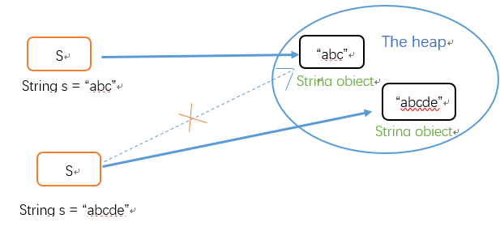
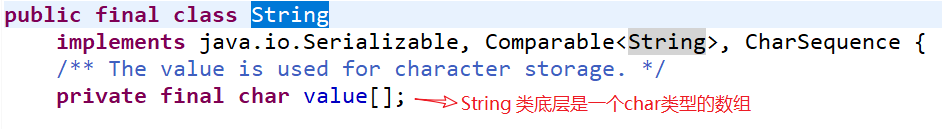
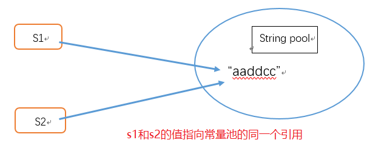

概要
我们都知道String类的对象是一个典型的不可变对象，我们调用它的subString（），replace（），concat（）这些方法都不会影响它原来的值，只会返回一个新构建的对象。
如下图，给一个已有字符串”abc”第二次赋值成”abcde”，不是在原内存地址上修改数据，而是重新指向一个新对象，新地址。

String为什么不可变？
翻开源码如下：

首先String类是用final关键字修饰，这说明String不可继承。再看下面，String类的主力成员字段value是个char[ ]数组，而且是用final修饰的。final修饰的字段创建以后就不可改变。因为虽然value是不可变，也只是value这个引用地址不可变。挡不住Array数组是可变的事实。
数组的本体结构在heap堆。String类里的value用final修饰，只是说stack里的这个叫value的引用地址不可变。没有说堆里array本身数据不可变。
如下示例：
1 | final int[] value={1,2,3} |
value用final修饰，编译器不允许我把value指向堆区另一个地址。但如果我直接对数组元素动手，情况就会发生变化。
1 | final int[] value={1,2,3}; |
所以为了保证String不可变，String类中把char类型的数组设置成private的，外界不允许访问，而且设计者把整个String类设计成final禁止继承，避免了String被改变。所以String是不可变的关键都在底层的实现，而不是一个final。
String 不可变的好处
1、不可变的好处，就要牵扯到字符串常量池了，只有当字符串是不可变的，字符串池才有可能实现。字符串池的实现可以在运行时节约很多heap空间，因为不同的字符串变量都指向池中的同一个字符串。但如果字符串是可变的，那么String interning将不能实现(译者注：String interning是指对不同的字符串仅仅只保存一个，即不会保存多个相同的字符串。)，因为这样的话，如果变量改变了它的值，那么其它指向这个值的变量的值也会一起改变。
1 | String s1 = "aaddcc"; |

这样在大量使用字符串的情况下，可以节省内存空间，提高效率。但之所以能实现这个特性，String的不可变性是最基本的一个必要条件。要是内存里字符串内容能改来改去，这么做就完全没有意义了。
2、因为字符串是不可变的，所以是多线程安全的，同一个字符串实例可以被多个线程共享。这样便不用因为线程安全问题而使用同步。字符串自己便是线程安全的。
3、因为字符串是不可变的，所以在它创建的时候hashcode就被缓存了，不需要重新计算。这就使得字符串很适合作为Map中的键，字符串的处理速度要快过其它的键对象。这就是HashMap中的键往往都使用字符串。
4、如果字符串是可变的，那么会引起很严重的安全问题。譬如，数据库的用户名、密码都是以字符串的形式传入来获得数据库的连接，或者在socket编程中，主机名和端口都是以字符串的形式传入。因为字符串是不可变的，所以它的值是不可改变的，否则黑客们可以钻到空子，改变字符串指向的对象的值，造成安全漏洞。
除了上面提到的String之外，常用的还有枚举类，以及java.lang.Number的部分子类，如Long和Double等数值包装类，BigInteger和BigDecimal等大数据类型。
StringBuilder和StringBuffer
String 覆盖了 equals 方法和 hashCode 方法，而 StringBuffer和StringBuilder没有覆盖 equals 方法和 hashCode 方法，所以，将 StringBuffer对象存储进 Java集合类中时会出现问题。
StringBuffer（线程安全） 和 StringBuilder都是继承自AbstractStringBuilder，底层都是数组，java9之前使用char，之后是byte，这个内部数组应该创建多大呢？目前的实现时，构建时初始字符串长度16。
延伸
String的特性》
1、String类是final的，不可被继承。
2、String类是的本质是字符数组char[], 并且其值不可改变。
3、String类对象有个特殊的创建的方式，就是直接指定比如String x = “abc”，”abc”就表示一个字符串对象。而x是”abc”对象的地址，也叫做”abc”对象的引用。
4、String对象可以通过“+”串联。串联后会生成新的字符串。
5、Java运行时会维护一个String Pool（String池），JavaDoc翻译很模糊“字符串缓冲区”。String池用来存放运行时中产生的各种字符串，并且池中的字符串的内容不重复。而一般对象不存在这个缓冲池，并且创建的对象仅仅存在于方法的堆栈区。
6、创建字符串的方式很多，归纳起来有三类：
其一，使用new关键字创建字符串，比如String s1 = new String(“abc”);
其二，直接指定。比如String s2 = “abc”;
其三，使用串联生成新的字符串。比如String s3 = “ab” + “c”;
《String对象的创建》
String对象的创建也有很多门道，关键是要明白其原理。
原理1：当使用任何方式来创建一个字符串对象s=X时，Java运行时（运行中JVM）会拿着这个X在String池中找是否存在内容相同的字符串对象，如果不存在，则在池中创建一个字符串s，否则，不在池中添加。
原理2：Java中，只要使用new关键字来创建对象，则一定会（在堆区或栈区）创建一个新的对象。
原理3：使用直接指定或者使用纯字符串串联来创建String对象，则仅仅会检查维护String池中的字符串，池中没有就在池中创建一个，有则罢了！但绝不会在堆栈区再去创建该String对象。
原理4：使用包含变量的表达式来创建String对象，则不仅会检查维护String池，而且还会在堆栈区创建一个String对象。
《不可变类》
JAVA为了提高效率，对String类型进行了特别的处理－－－为string类型提供了串池
定义一个string类型的变量有两种方式：1
2string name= "tom ";(String name="t"+"o"+"m"的效果和此处是相同的)
string name =new string( "tom ")
如果你使用了第一种方式，那么当你在声明一个内容也是 “tom “的string时，它将使用串池里原来的那个内存，而不会重新分配内存，也就是说，string saname= “tom “,将会指向同一块内存。而如果用第二种方式，不管串池里有没有”tom”，它都会在堆中重新分配一块内存，定义一个新的对象。
另外关于string类型是不可改变的问题： string类型是不可改变的，也就是说，当你想改变一个string对象的时候，比如name= “madding “ 那么虚拟机不会改变原来的对象，而是生成一个新的string对象，然后让name去指向它，如果原来的那个 “tom “没有任何对象去引用它，虚拟机的垃圾回收机制将接收它。
最后，关于定义String的堆栈问题：String s =new String()分析堆与栈,是先定义S,还是先new string()？？？
11
2String str1 = "abc";
System.out.println(str1 == "abc");
步骤：
1) 栈中开辟一块空间存放引用str1；
2) String池中开辟一块空间，存放String常量”abc”；
3) 引用str1指向池中String常量”abc”；
4) str1所指代的地址即常量”abc”所在地址，输出为true；
21
2String str2 = new String("abc");
System.out.println(str2 == "abc");
步骤：
1) 栈中开辟一块空间存放引用str2；
2) 堆中开辟一块空间存放一个新建的String对象”abc”；
3) 引用str2指向堆中的新建的String对象”abc”；
4) str2所指代的对象地址为堆中地址，而常量”abc”地址在池中，输出为false；
31
2String str3 = new String("abc");
System.out.println(str3 == str2);
步骤：
1) 栈中开辟一块空间存放引用str3；
2) 堆中开辟一块新空间存放另外一个(不同于str2所指)新建的String对象；
3) 引用str3指向另外新建的那个String对象 ；
4) str3和str2指向堆中不同的String对象，地址也不相同，输出为false；
41
2String str4 = "a" + "b";
System.out.println(str4 == "ab");
步骤：
1) 栈中开辟一块空间存放引用str4；
2) 根据编译器合并已知量的优化功能，池中开辟一块空间，存放合并后的String常量”ab”；
3) 引用str4指向池中常量”ab”；
4) str4所指即池中常量”ab”，输出为true；
51
2
3final String s = "a"; //注意:这里s用final修饰，相当于一个常量
String str5 = s + "b";
System.out.println(str5 == "ab");
步骤：
同四
61
2
3
4String s1 = "a";
String s2 = "b";
String str6 = s1 + s2;
System.out.println(str6 == "ab");
步骤：
1) 栈中开辟一块中间存放引用s1，s1指向池中String常量”a”，
2) 栈中开辟一块中间存放引用s2，s2指向池中String常量”b”，
3) 栈中开辟一块中间存放引用str5，
4) s1 + s2通过StringBuilder的最后一步toString()方法还原一个新的String对象”ab”，因此堆中开辟一块空间存放此对象，
5) 引用str6指向堆中(s1 + s2)所还原的新String对象，
6) str6指向的对象在堆中，而常量”ab”在池中，输出为false